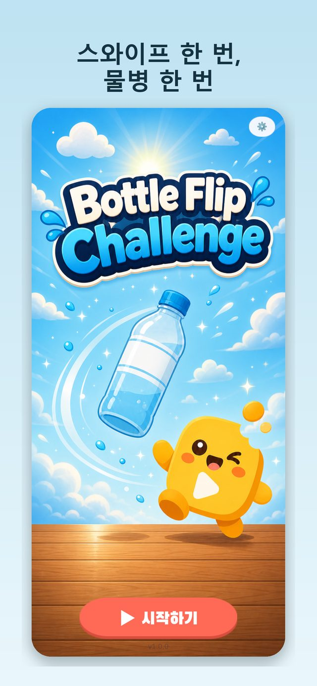
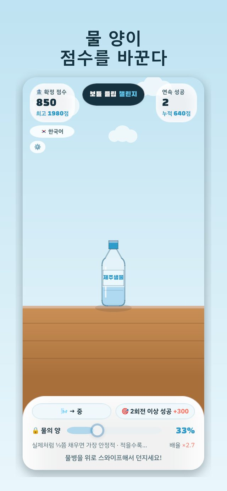
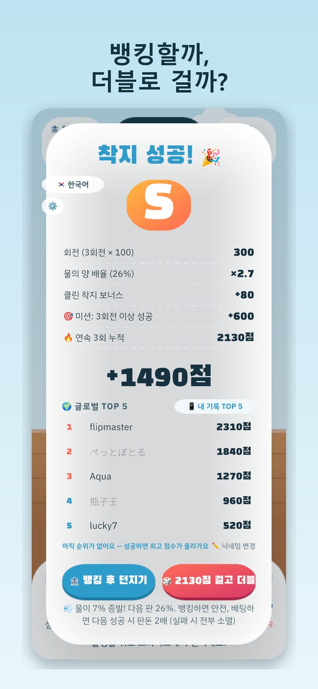

🍼 Bottle Flip: Water Challenge
스와이프 한 번, 물병 한 번. 물이 진짜로 출렁이는 물병 던지기 — 물 양이 점수를 바꾼다.
One swipe. Real water physics. Bank it or bet it all.
App Store에서 받기 (무료) TestFlight 베타



어떤 게임?
- 실제 물리 — 병 속 물이 출렁이며 무게중심이 움직입니다. 물이 적을수록 어렵고 점수 배율은 최대 ×3.4.
- 뱅킹 vs 더블 — 성공할 때마다 쌓이는 점수를 확정하거나, 전부 걸고 다음 판 2배에 도전. 실패하면 전부 소멸.
- 주간 글로벌 랭킹 — 매주 월요일 리셋, 서버 리플레이 검증으로 공정하게.
- 한 손 · 한 판 10초 · 6개 언어 · 무료 (광고 포함, 인앱 결제 없음)
SnackGames Lab
퇴근 후 혼자 만드는 가벼운 캐주얼 게임 스튜디오. 문의: kunz19870414@gmail.com